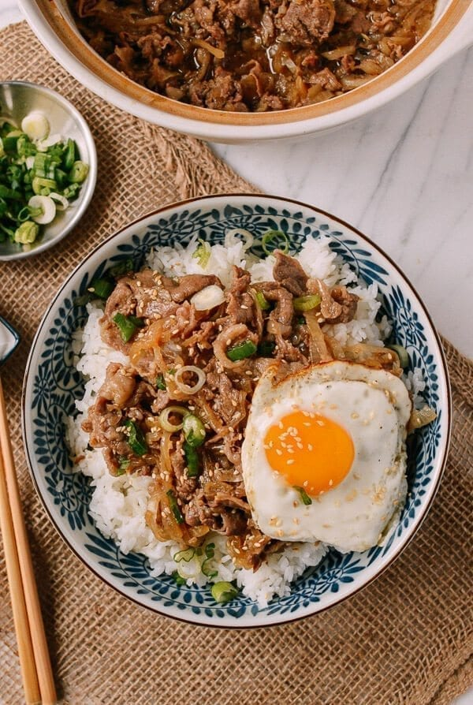

Gyudon (Japanese Beef and Rice Bowl)

Description
Gyudon is a staple of Japanese lunches. It is a simple, yet effective recipe
that is sure to leave you ready for more!
Ingredients
- Neutral oil(such as vegetable or canola oil)
- 2 medium onions (very thinly sliced)
- 1 pound very thinly sliced beef (450g, fatty beef chuck or ribeye)
- 2 teaspoons sugar
- 2 tablespoons mirin
- 2 tablespoons soy sauce
- 1 cup dashi stock (can also substitute beef or chicken stock)
- 4 eggs
- 4 cups cooked white rice (short grain or medium grain preferred)
- 1 scallion (chopped)
- 2 teaspoons toasted sesame seeds (optional)
Steps
- Heat 2 tablespoons oil in a large skillet over medium high heat, and cook
the sliced onions for about 10 minutes, stirring often.
- Add the beef and sugar, and cook until the beef is slightly browned. Add
the mirin, soy sauce, and stock. Bring to a simmer, and cook for about 10-15
minutes to reduce the stock into a thin sauce. Taste for seasoning, and add a little more soy sauce if needed.
- Meanwhile, heat another couple tablespoons of oil in a cast iron or non-stick
skillet. Cook the eggs sunny-side up. You can cook them in batches if needed. The yolks should still be runny!
- When the beef is done simmering, divide the rice among 4 bowls, and top with
the beef and an egg for each bowl. Garnish with chopped scallion and toasted sesame seeds, if using.